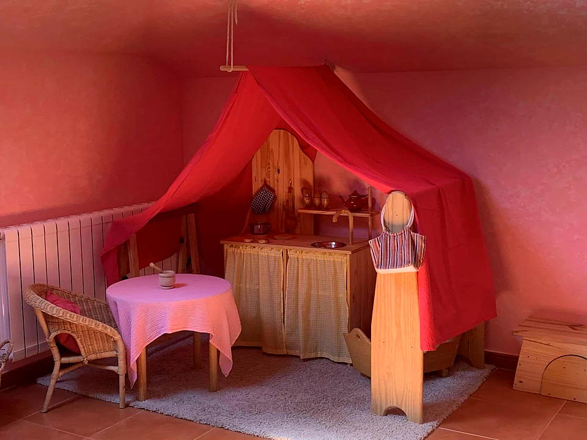

Free play and imitation
Free play is a child’s natural activity and the heart of the day. Toys are simple, made of wood and cloth, so imagination does the rest. The adult is the model children imitate in gesture, speech and the way they treat others.